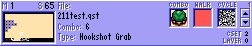
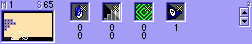
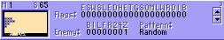
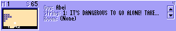
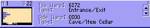
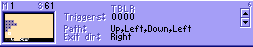
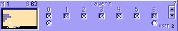
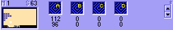

The first thing you will see when you open ZQuest is the main window. The main area shows the current screen on which you can place combos. To the right is the combo list, and at the bottom the info area.
To place combos, click on a combo in the list - the current combo is shown above the list - and click on the screen to place it. You can scroll the combo list with the hotkeys or the mouse wheel.
ZQuest is loaded with "hot keys". Once you become familiar with them, you will be able to work faster. Here is a list of keys for the main window:
Screen| arrow keys | change the current screen |
| comma,period | cycle through maps |
| W | toggle show walk flags for screen |
| F | toggle show flags for screen |
| D | toggles "dark room" screen flag |
| L | turn out the lights preview as dark room |
| Q | toggles 1st to Cset of each tile, then to combo type. |
| 0-9 | set the screen color to this level color this is only for convenience in editing; the game ignores this color. |
| shift + 0-4 | same as above but adds 10 to the level number |
| F4 | choose screen palette for ZQuest only. No effect on game. |
| I, G, S, R, E, A | set current screen's item, guy, string, room type, enemies, and room data. |
| F5 | apply template |
| F6 | choose doors |
| F7 | color set fix |
| F8 | place flags |
| F9 | Set screen flags |
| F10, F11 | set tile and side warps |
| F12 | set enemy flags |
| C | copy current screen |
| V | paste to current screen |
| Del | delete current screen |
| X | preview current screen |
| Numpad +,- | change the current CSet |
| shift + up,down | scroll combo panel one line |
| shift + PgUp, PgDown | scroll combo panel one screen of a combo page |
| control + PgUp, PgDown | scroll combo panel one combo page |
| Apostrophe | List combos used |
| O | switch between normal, relational, dungeon carving and alias modes |
| PgUp, PgDown | change the info area page |
| *,/ | change the current flag for flag placement mode |
| F1 | help file |
| F2 | save. Use frequently. |
| F3 | load a new quest |
| ESC | quit ZQuest |
| U | undo last change |
| Z | take screenshot. |
| P | view a picture |
Note: ZQuest uses Allegro's key bindings which means that it'll act as if you used a US keyboard whatever your language settings are, and normal + and numpad + do not call the same function, for instance - only numpad + changes csets.
Right-click on a combo on the current screen to bring this up.
| Draw Block commands 1x2, 2x1, 2x2, 4x2 | The first number is width and the second height. Example: to draw the large tree 2x2 select the upper left combo of the tree, right-click where you want the upper left combo to be on the screen, then click on Draw 2x2 Block. The entire tree will be drawn on the main screen. | ||||||
| Brush Width/Height | Allow you to draw with more than one combo at once. So, if you need to place a lot of something down and that thing takes up a 4-combo square, you'd set the brush height and brush width both to 2. Then, you start drawing with it. Space bar changes how it looks the same way as it does in the combo list screen. | ||||||
| Set Fill Type | CTRL+Click where you want to fill. | ||||||
| |||||||
| Replace | Replaces all instances of the combo you right-clicked on with the selected combo. | ||||||
| Properties | Gives the position, combo, Cset, flag if any, and combo type of the tile you right-clicked on. | ||||||
| Select Combo | Makes the combo you right-clicked on the selected combo. | ||||||
| Scroll to combo | scrolls the combo panel to show the current combo. | ||||||
| Edit Combo | Brings up the Edit Combo window for the combo you right-clicked on. |
This is the box on the lower part of the ZQ screen. It has 8 pages, to toggle between the pages press PageDown or PageUp. The page number is the number in the upper right corner of the box.
The left area shows the screens that exist on the current map, above it the map and screen numbers are displayed.
|
Page 1:  |
File shows the title of the quest file you are editing, combo and type the combo number and type of the combo currently selected. To the right, the first square shows the combo's tile in the current Cset, the second that walkable areas non-walkable areas are red, and the third the current combo's next combo. The arrows scroll the combo list one page, beneath it is the current Cset | ||||||||||||||||||||||||||||||||||||||||||||||
| Page 2:  |
There are 4 "placement" squares on this page. To place, click on the square then on the screen. The first square is the location of the current screen's item press I to set, the second the secret stairs, the third green square is the continue point where Link will appear when he dies/continues on this screen, or enters a Dmap on this screen. The numbers under the squares are that square's current position in pixels, or 0,0 if not set. The last square is the flag square, clicking on it enters flag placement mode and the number under it the current flag. | ||||||||||||||||||||||||||||||||||||||||||||||
| Page 3:  |
This page shows if some common screen and enemy flags are set on this screen:
| ||||||||||||||||||||||||||||||||||||||||||||||
| Page 4:  | Shows the Guy, String, and Room type assigned to the current screen. If the room type requires additional information of the kind that usually appears in Catch All under Data, this information will be shown too. | ||||||||||||||||||||||||||||||||||||||||||||||
| Page 5:  | Shows Tile Warps and Side Warps on the current screen along with the warps destination Dmap:screen# and type. | ||||||||||||||||||||||||||||||||||||||||||||||
| Page 6:  | Shows triggers for side warps: Right, Left, Bottom, Top, Maze path for the current screen and the Exit direction of the maze. | ||||||||||||||||||||||||||||||||||||||||||||||
| Page 7:  | Layers: Check the layers you want to show on the base Layer 0 screen in ZQuest. If any layers besides 0 are used assigned in Data/Layers, a circle will appear under that layer. By clicking on that circle, you can edit that layer from the base screen instead of having to go to the map/screen where that layer actually is. | ||||||||||||||||||||||||||||||||||||||||||||||
| Page 8:  | These blue squares are the exit points where Link appears when he exits a cave on to this screen. There is one for each of the four warp targets A-D. |